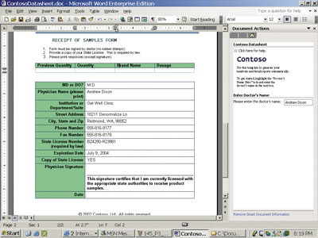
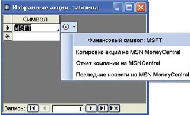
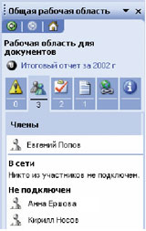
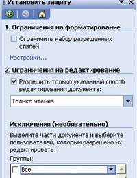
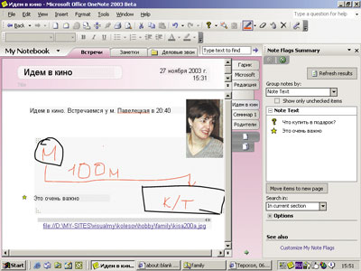
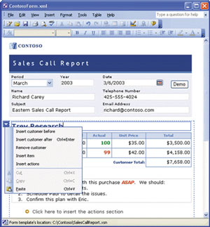

Андрей Колесов
Все приведенные в этой статье сведения основаны на информации о международной версии по состоянию на 10 ноября 2003 г. Варианты поставок, особенно для локализованных продуктов, могут отличаться от приведенных здесь. Презентация русской версии Microsoft Office System 2003 состоится в Москве в начале декабря.
От набора продуктов к платформе
Времена, когда офисные приложения Microsoft были представлены лишь текстовым редактором Word и электронными таблицами Excel, кажутся далеким прошлым. А ведь еще в начале 1990-х эти две программы отнюдь не занимали ведущих позиций - лидерами были пакеты Word Perfect и Lotus 1-2-3.
С тех пор ситуация полностью изменилась. От версии к версии семейство Microsoft Office постоянно пополнялось новыми функциональными приложениями, а главное - повышался уровень интеграции комплекта. Безусловно, одним из важнейших факторов, способствовавших расширению сферы применения офисных программ, стала реализация в версии Office 97 единого механизма внутреннего программирования на базе VBA и унифицированной объектной модели. Все это уже тогда позволило Microsoft позиционировать Office не просто как набор приложений, а как платформу для решения широкого круга задач пользователей и для разработки специализированных решений.
Говоря об офисных продуктах Microsoft, мы обычно имеем в виду известные приложения, входящие в состав пакета Microsoft Office и предназначенные в первую очередь для широкого круга пользователей. Но на самом деле такое представление однобоко: комплект Office уже давно пополняется разнообразными специализированными продуктами - FrontPage, Project, Visio и т. п.
Кроме того, Microsoft Office традиционно воспринимается как группа настольных приложений, но и это представление уже давно отстало от действительности. Учитывая общую тенденцию современных клиентских решений, ориентированных на поддержку коллективной работы, здесь все шире применяются серверные и Интернет-технологии.
Сейчас Microsoft фактически впервые представила всю эту группу офисных продуктов как единую систему, которая получила название Microsoft Office System. Изменилось и официальное полное наименование отдельных продуктов - в него добавилось слово Office: например, Microsoft Office Word (для краткости мы все же будем называть программу MSO Word или просто Word). Формально новая версия имеет номер, соответствующий году выпуска, - 2003, но в практической работе (диагностических сообщениях, названиях служебных библиотек и т. д.) часто можно видеть порядковый номер - 11.
Новые продукты появляются, старые исчезают
Попробуем оценить новшества представленной офисной системы Microsoft по сравнению с предыдущим выпуском, появившимся в 2001 г. (табл. 1). Ту или иную модернизацию претерпели все приложения, но в первую очередь нужно выделить принципиально новые решения, в частности, настольные приложения OneNote и InfoPath. Появился дополнительный вариант издательского пакета Publisher с расширенными средствами обработки цифровых изображений. Несколько изменился и состав дополнительных инструментов. Кроме того, Microsoft намерена предлагать специальные компоненты и шаблоны Solutions Accelerators для автоматизации выполнения определенных задач.
Таблица 1. Состав Microsoft Office System 2003
| Название продукта | Назначение | |
| Приложения общего назначения | ||
| MSO Word | Текстовый процессор | |
| MSO Excel | Электронные таблицы | |
| MSO Outlook | Диспетчер электронной почты и персональный менеджер | |
| MSO PowerPoint | Подготовка презентаций | |
| MSO Access | Настольная СУБД | |
| Специализированные приложения | ||
| MSO FrontPage | Создание и поддержка Web-сайтов | |
| N | MSO InfoPath | Создание динамических форм с заполнением данных из разнородных источников |
| N | MSO OneNote | Управление деловыми заметками |
| SO Publisher (дополнительный вариант "with Digital Imaging) | Настольная издательская система | |
| MSO Visio (Standard, Professional) | Деловая и техническая графика для проектирования бизнес-процессов и систем | |
| MSO Project (Standard, Professional) | Управление проектами | |
| Серверы | ||
| MSO SharePoint Portal Server | Портал для групповой работы с документами | |
| N | MSO Live Communications Server | Сервер поддержки коммуникаций между сотрудниками в реальном масштабе времени |
| MSO Project Server | Управление проектами при групповой работе | |
| Сервисы | ||
| N | MSO Live Meeting | Онлайновый сервис поддержки групповой работы |
| MSO Online | Набор дополнительных Web-ресурсов | |
| Дополнительные инструменты | ||
| Business Contact Manager for Outlook | Диспетчер деловых контактов, реализованный в виде Add-Ins для Outlook | |
| N | Producer for MSO PowerPoint | Конструктор мультимедийных презентаций на базе технологии Microsoft Windows Media |
| N | MSO Picture Manager | Диспетчер изображений |
| N | MSO Solutions Accelerators | Набор дополнительных компонентов и шаблонов, ускоряющий выполнение отдельных задач |
| Сопутствующие технологии | ||
| Exchange Server 2003 | Почтовый сервер | |
| SharePoint Services | Упрощенный вариант SharePoint Portal Server, реализованный на уровне сервиса серверной ОС | |
| Windows Server 2003 | Новейшая серверная ОС Microsoft | |
Система управления проектами MSO Project теперь представлена также серверным вариантом (правда, он появился еще год назад). Портал поддержки групповой работы MSO SharePoint Portal Server перекочевал из серверного семейства продуктов Microsoft в офисное, а его "облегченный" вариант SharePoint Services реализован в виде автономного сервиса в Windows Server 2003. Появились также существенно обновленные средства поддержки группового общения в виде сервера Live Communications и сервиса Live Meeting.
В то же время мы не видим в табл. 1 некоторых традиционных офисных продуктов. Еще в версии Office XP из комплекта исчез редактор фотоизображений PhotoDraw, хотя, возможно, его в какой-то мере заменят другие продукты (например, MSO Picture Manager). Microsoft MapPoint, продукт класса "настольная ГИС", существует, но он перекочевал из семейства Office в группу "Игры и услуги" - возможно, Microsoft намеревается преобразовать его из настольного приложения в набор Web-сервисов (http://www.microsoft.com/mappoint).
Также не очень ясна судьба пакета Data Analyzer. В списке Microsoft Office System это средство анализа данных не упоминается, хотя на сайте корпорации информация о нем по-прежнему присутствует. Скорее всего, функционал Data Analyzer перейдет в состав комплекса аналитических средств для SQL Server. Наверное, аналогичная судьба ждет и инструменты, предназначенные для управления бизнес-процессами, WorkFlow Designer for SQL Server и WorkFlow Designer for Exchange 2000 Server (они поставлялись в составе Microsoft Office XP Developer Edition).
Несмотря на рост числа компонентов Microsoft Office System, центральное место в комплекте по-прежнему занимает группа Microsoft Office Editions, которая включает приложения общего назначения (табл. 2). По составу вариантов Office 2003 в целом повторяет схемы комплектации Office XP, однако в корпоративном выпуске вместо FrontPage теперь поставляется новое приложение InfoPath.
Таблица 2. Состав Microsoft Office 2003
| Продукт | Редакция Microsoft Office 2003 | ||||
| Basic | Standard | Small Business | Professional | Professional Enterprise | |
| Word | + | + | + | + | + |
| Excel | + | + | + | + | + |
| Outlook | + | + | + | + | + |
| PowerPoint | + | + | + | + | |
| Access | + | + | |||
| Business Contact Manager for Outlook | + | + | + | ||
| Publisher | + | + | + | ||
| InfoPath | + | ||||
| Расширенная поддержка XML и управление правами доступа (IRM) | + | + | |||
Таблица 3. Варианты поставок Microsoft Office 2003
| Каналы поставок | Редакция Microsoft Office 2003 | ||||
| Basic | Standard | Small Business | Professional | Professional Enterprise | |
| OEM (предустановленные на ПК) | + | + | + | ||
| Коробочные версии | + | + | + | ||
| Коробочная версия для учащихся и преподавателей | + | ||||
| Программы лицензирования | + | + | + | ||
Правда, появился специальный вариант поставки для учащихся и преподавателей (табл. 3). По функционалу он соответствует выпуску Standard, но отличается более низкой ценой и условиями лицензирования. "Учебный" вариант предназначен для индивидуального, домашнего использования, в то время как для образовательных учреждений по-прежнему существуют специальные лицензии Academic.
Специального выпуска Developer, который ранее включал пакет Professional и дополнительные средства разработки, в новой версии не будет. Вместо него предлагается отдельный набор инструментов Visual Studio Tools for Microsoft Office System. В целом среда программирования офисных приложений по-прежнему базируется на традиционном VBA, хотя в ней появился целый ряд новшеств (но это тема отдельной будущей публикации).
Еще одно важное отличие Microsoft Office 2003 - он будет работать только с Windows 2000 (при установленном Service Pack 3), Windows XP и более поздними операционными системами. Минимальные требования к аппаратной платформе: Pentium 233 МГц и 128 Мбайт оперативной памяти, хотя рекомендуется иметь компьютер по крайней мере с вдвое лучшими характеристиками.
Новые технологии в Office 2003
Рассмотрение новых функций каждого офисного приложения (сейчас мы ведем речь только о программах общего назначения, входящих в пакет Microsoft Office) заняло бы очень много времени. Гораздо важнее оценить общие тенденции развития этого семейства, выделив наиболее значимые инновации. Отметим, в частности, следующие технологии:
- поддержку коллективной работы, в первую очередь за счет тесной интеграции с продуктами и технологиями Microsoft SharePoint;
- расширенное использование XML-стандартов;
- создание и управление интеллектуальными (smart) документами;
- улучшение средств защиты информации.
Расширенная поддержка XML
Office 2003 - первое семейство офисных приложений, поддерживающее настраиваемые определения схем XML (XML Schema Definitions, XSD). Это означает, что опытные пользователи и разработчики могут структурировать данные в соответствии со своими потребностями, а организации могут создавать внутри документов интегрированные решения для бизнеса, взаимодействующие с другими ценными Web-службами на основе XML.
Пакет поддерживает работу с XML сразу в нескольких программных продуктах. В Word 2003 можно сохранять документы в формате XML и создавать шаблоны на базе определенных пользователем схем. Теперь пользователи могут готовить в Word объемные документы с длинными текстами и разнообразным форматированием (например, письмо клиенту или маркетинговый план) и не терять это форматирование при сохранении в формате XML. Поиск документов XML осуществляется так же быстро, как поиск в базе данных, что позволяет получать доступ к сведениям, хранящимся в документах по всей организации.
Excel 2003 может читать данные в любой определенной пользователем схеме XML без изменения их формата. Существенно упростилось в Excel многократное использование и анализ данных на основе XML. Технология XML позволяет Excel обновлять диаграммы, таблицы и графики по мере внесения изменений в исходное хранилище данных XML. При этом пользователь получает динамичную информацию для анализа в любом формате Excel в режиме реального времени.
Самое подходящее средство Office для извлечения сведений из одной или нескольких таблиц базы данных - Microsoft Access. В Access 2003 реализована возможность просмотра связанных таблиц БД и выбора способа экспортирования данных с помощью определенной пользователем схемы XSD.
Смарт-документы и программируемые области задач
Смарт-документы - это новая технология, позволяющая создавать решения на базе документов, рабочих книг или шаблонов (Word 2003 или Excel 2003), которые используют XML-структуру и настраиваемую панель задач. Пользователь определяет XML-схему, согласно которой панель задач будет автоматически перестраиваться по мере того, как курсор перемещается по различным разделам смарт-документа. Таким образом можно выводить на панель задач контекстно-обусловленные справочные материалы, инструменты или полезные графические образы (рис. 1).
|  | Рис. 1. Пример смарт-документа в Word 2003.
|
В частности, можно создать решение для служб социальной защиты, которое переводило бы документы на различные языки или предоставляло бы подателям заявок контекстную справку при заполнении формы. В зависимости от типа пользователя, его ID или введенных им данных механизм смарт-документов мог бы автоматически перенастраивать документ Word, включая в его состав необходимые именно этому пользователю разделы. К примеру, форма эффективности работы могла бы иметь различные разделы для руководителей и подчиненных.
Смарт-теги
В Microsoft Office 2003 работа со смарт-тегами возможна не только в Word и Excel, но и в Access, PowerPoint и Outlook. Кроме того, смарт-теги поддерживают новые функции, например, связанные с так называемыми областями исследования задачи и общим рабочим пространством. Как и в Office XP, смарт-теги в новой версии распознают определенные слова или наборы слов в момент их ввода (например, имя, адрес или биржевую сводку) и предоставляют пользователям возможность привязать к этим введенным данным некие сведения и действия. В Office 2003 возможности смарт-тегов расширены (рис. 2).
|  | Рис. 2. Новый пакет SDK в Office 2003 позволяет разработчикам создавать собственные смарт-теги, которые можно подключить к полям таблиц, запросов, форм и к страницам доступа к данным в Access.
|
Разработчики Access 2003 могут внедрить смарт-тег в любое поле Access. В любом элементе управления формой, отчетом или страницей данных есть команда установки смарт-тега. Эту команду можно применить к любому столбцу или полю таблицы. Столбцы запроса унаследуют это свойство у таблицы, на основании которой осуществлялся запрос.
Пользователи Access 2003, создающие формы для третьих лиц, могут, не прибегая к программированию, вложить смарт-теги в элементы управления. Это позволяет им создавать в Access решения, в точности напоминающие решения для других приложений Office.
В Word 2003 и Excel 2003 смарт-теги интегрированы с поддержкой языка XML, и выполнение действий, связанных со смарт-тегом, теперь может быть привязано к элементам XML в документах и электронных таблицах. В Word возможности смарт-тегов также расширены, что позволяет применять этот механизм непосредственно к XML-элементам. Поэтому действия могут относиться к целым разделам документов, а не только к нескольким словам, а работа их теперь может осуществляться с "типами" или наборами данных и не основываться на распознавании отрывка текста.
Смарт-теги можно настроить на выполнение автоматических действий, например, на преобразование артикулов товаров в БД продаж в гиперссылки, добавление правильно отформатированных ссылок в конец исследовательской работы или автоматическое присвоение индекса сотрудникам, организациям или продуктам, упоминающимся в статье.
Организация групповой работы
Большое внимание разработчики Microsoft Office 2003 уделили организации тесного взаимодействия между специалистами c использованием служб Windows SharePoint. Вот некоторые из новых функций.
Поле задач общей рабочей области позволяет при редактировании документа непосредственно в приложении увидеть с любого сервера, на котором запущены службы Windows SharePoint, описание проводимой совместной работы (рис. 3).
|  | Рис. 3. Панель общей рабочей области.
|
Узлы рабочей области документов обеспечивают интеллектуальную организацию совместной работы над документами и улучшенное управление версиями. Пользователи получают средства общего доступа к документу в режиме реального времени, назначения задач и крайних сроков их выполнения, а также могут легко увидеть, на каком этапе находится создание документа.
Узлы рабочей области совещаний расширяют возможности организации встреч, получения информации и добавления участников, находящихся в различных местах.
Технология "мгновенного обмена сообщениями" интегрирована с приложениями Office 2003, что позволяет незамедлительно получать сведения о присутствии партнера и начинать диалог, непосредственно работая с документом или с Outlook.
Облегчен доступ участников команды к общим контактам и общим календарям - это упрощает координацию и планирование совещаний. Реализован режим одновременного просмотра нескольких календарей.
Защита информации
В Office 2003 существенно расширены возможности управления правами редактирования документа и защиты его содержимого. Для ограничения доступа к документу можно задавать перечень лиц, уполномоченных на внесение изменений. Система управления правами доступа к информации (Information Rights Management, IRM) позволяет ограничить использование в документах функций вырезания, копирования, вставки, печати и отправки электронных сообщений, в том числе с учетом ограничений по времени.
IRM - это технология защиты информации, но не сети. Это означает, что к документам можно установить совместный доступ и что их можно отправлять по электронной почте. При этом сохраняется контроль за тем, кто имеет права на их использование, а также за характером этого использования. Если документ защищен такой технологией, ограничения на доступ к нему и его использование вступают в силу независимо от того, где располагаются данные.
В то же время бесплатная программа просмотра RM Viewer гарантирует, что любой пользователь Windows сможет работать с защищенными IRM документами независимо от наличия Office 2003 на его компьютере, что позволяет компании организовывать совместный доступ третьих лиц к объектам интеллектуальной собственности, не нарушая политики безопасности.
Средства IRM можно использовать в Outlook для предотвращения пересылки, копирования и вывода электронных сообщений на печать. Защищенные сообщения во время передачи автоматически зашифровываются. Если отправитель задал функциональные ограничения доступа, то в Outlook будут отключены соответствующие команды. Вложенные в защищенные сообщения документы Office также автоматически защищаются.
В документах Excel, Word и PowerPoint теперь можно установить защиту как для отдельных пользователей, так и для групп (при установке групповых разрешений расширение группы требует наличия службы Active Directory). Для каждого пользователя или группы можно установить набор разрешений в соответствии с ролью, определенной владельцами документа, - читатель, рецензент или редактор. В зависимости от роли система IRM при активации назначенных прав отключит определенные команды. Владельцы могут также запретить печать и установить сроки истечения действия прав. По наступлении этого срока открыть документ будет невозможно. Пакет позволяет гибко управлять правами доступа на уровне отдельных компонентов документа. Например, можно жестко зафиксировать структуру документа, защитить от редактирования или просмотра его фрагмент или разрешить использовать только определенные стили (рис. 4).
|  | Рис. 4. Окно управления защитой документа.
|
Чтобы использовать средства IRM c Office 2003, Outlook 2003 и службами Windows SharePoint, необходимо установить сервер Windows Server 2003 и клиентскую лицензию premium. Для тех, кто не имеет сервера Windows, служба IRM будет доступна с сервера Microsoft. Это позволит применять в качестве механизма аутентификации технологию Microsoft Passport, а не Active Directory.
Новшества Outlook 2003
Наверное, наибольшую модернизацию в составе Office претерпел пакет Microsoft Outlook 2003. Среди его организационных и функциональных усовершенствований можно отметить следующие. Во-первых, абсолютно новый вид приобрел пользовательский интерфейс. Во-вторых, новая область переходов, в отличие от существовавшего до сих пор статичного списка папок, позволяет делать более четкие и точные перемещения. В-третьих, усовершенствованы функции работы с почтой.
Кроме того, в Outlook реализованы дополнительные и расширенные функции, которые помогут организовать работу, расставить приоритеты и быть всегда в курсе последних изменений. Коротко охарактеризуем их.
Быстрые пометки. Цветные пометки помогут не упустить из виду нужные сообщения.
Папки поиска. Позволяют собрать необходимые данные в едином месте без перемещения или копирования сообщений.
Оповещения о поступлении сообщений. Оповещение, выводимое на Рабочий стол, и значок в области уведомлений помогут отслеживать новые электронные сообщения во время работы в других приложениях.
Правила и оповещения. Усовершенствованный механизм "Правила и оповещения" позволяет назначать уведомления об обновлениях на узле Microsoft Windows SharePoint, о результатах поиска и т. п.
Интеграция рукописного ввода
При работе с пакетом Microsoft Office XP пользователи планшетных компьютеров могли загрузить пакет дополнения Office XP for Tablet PC (Tablet Pack), чтобы создавать рукописные сообщения электронной почты, рисовать в программах Word, Excel и PowerPoint, а также создавать заметки в презентациях. В пакете Office 2003 поддержка рукописного ввода встроена непосредственно в приложения.
Рукописный ввод. Пользователи могут обращаться со своими документами Word, электронными таблицами Excel и слайдами PowerPoint как с листами бумаги, делая заметки поверх документа или на полях и сохраняя наброски для последующей проработки.
Отображение и сокрытие рукописных примечаний. Интеграция рукописных примечаний с панелью инструментов рецензирования в Word, Excel и PowerPoint позволяет отображать и скрывать рукописные примечания так же, как и остальные примечания и исправления.
Надписи внутри примечаний Word. В редакторе Word имеется функция вставки рукописных примечаний в выносках, позволяющая вручную писать внутри примечаний Word с сохранением таких функций, как возможность фильтрования по автору. При использовании примечаний в выносках гарантируется, что примечания останутся привязанными к комментируемому тексту при последующем редактировании документа.
"Привязка" примечаний. В Office 2003 делается первый шаг в сторону настоящей интеграции рукописных примечаний и текста на странице путем ограниченной поддержки обтекания и привязки в документе.
Два режима рукописного ввода. В дополнение к вставке примечаний непосредственно в поле документа в программе Word можно вставлять рукописные рисунки с использованием такого же интерфейса, что и при вставке рисунков или текстовых надписей.
Две панели инструментов рукописного ввода. Одна панель предназначена для рисования и рукописного ввода, другая - для ввода примечаний. В каждой имеется набор "ручек", "фломастеров" и средств выделения, для которых можно задавать цвет и ширину штриха.
Привычный интерфейс. В остальных функциях рукописного ввода в пакете Office 2003 применяется тот же интерфейс, что и в предшествующем пакете Tablet Pack.
Копирование и вставка. Объекты рукописного ввода можно копировать и вставлять, передавая их таким образом из одних приложений в другие.
Диспетчер деловых контактов
В состав Microsoft Office 2003 вошел обновленный вариант планировщика Business Contact Manager (BCM), интегрированный непосредственно в Outlook и остальные приложения и ориентированный на торговых работников и предпринимателей. Диспетчер контактов расширяет функции программы Outlook, предоставляя базу данных по продажам и клиентам организациям малого бизнеса. BCM можно отнести к категории "облегченных" CRM-решений.
Контакты могут храниться вместе со связанными с ними документами, изображениями, заметками, сведениями о финансовом состоянии и прочими данными. BCM связывает эту информацию с календарными встречами, задачами, напоминаниями, электронными таблицами, списками дел и функциями электронной почты. В планировщике имеются следующие основные функции.
Отслеживание направлений и возможностей. BCM позволяет создавать страницу контакта, содержащую важнейшие сведения о каждой деловой возможности, устанавливать напоминания, правила и уведомления о необходимых делах, а также сохранять другие данные, накапливающиеся по мере развития взаимоотношений.
Централизованное управление сведениями о клиенте. Каждая страница контакта может включать связанные сообщения электронной почты, документы, заметки, историю покупок и платежей клиента, изображения и т. п., так что пользователь может непосредственно видеть каждый этап взаимодействия клиента с компанией и вовремя реагировать на события.
Поддержание взаимоотношений с клиентами. BCM позволяет сортировать и группировать контакты, облегчая пользователям создание персонифицированных сообщений электронной почты и новостных бюллетеней.
Интеграция контактов и бизнес-процессов. BCM может работать совместно с другими приложениями и даже поддерживать процессы, основанные на "бумажной" технологии, например, отправку счетов по факсу. Пользователю предоставляются организационные средства для управления циклом продажи на протяжении всего периода взаимоотношений с клиентом.
Импорт контактных сведений. Можно импортировать информацию из таких средств управления контактами, как ACT! или Goldmine, а также из информационных хранилищ на базе Microsoft Excel и финансовых приложений типа Quickbooks.
Управление торговым персоналом. Владельцы предприятия могут оперативно определить, над какими счетами и направлениями работают торговые сотрудники, или просмотреть прогнозы продаж по группе или отдельному работнику, чтобы оценить, кто работает продуктивнее всех, своевременно заметить тенденции и наглядно отобразить все этапы взаимоотношений каждого работника предприятия с определенным счетом или направлением продаж.
Новые приложения - OneNote и InfoPath
В Microsoft Office System 2003 появились два новых приложения - OneNote и InfoPath. Первое предназначено для персональной работы, второе ориентировано на решение деловых задач на предприятии.
Программа OneNote реализована в виде резидентного приложения, значок которого автоматически помещается на Панели задач. После активизации этого значка на экране появляется новый листок, куда можно заносить нужную информацию. Наибольшая эффективность работы обеспечивается, если работать с монитором, предусматривающим рукописный ввод (а также с планшетным или карманным ПК). Но и на традиционном компьютере можно сделать рисунок с помощью обычной мыши (рис. 5)
|  |
| Рис. 5. Внешний вид OneNote.
|
После закрытия текущего "листка" он автоматически сохраняется в папке OneNote. Чтобы не забыть о важном мероприятии, перед закрытием окна можно прямо из OneNote сделать отметку о нем в списке заданий Outlook, - тогда программа сама напомнит о нем. Если некогда что-то фиксировать на листке руками, можно озвучить информацию через встроенный в компьютер микрофон - аудиозапись будет автоматически "прикреплена" к листку. Просматривая записанную информацию, пользователь не только услышит свою речь, но и синхронно увидит подсвеченные на экране данные, которые он вводил в соответствующий момент.
InfoPath ориентирован на совсем другие задачи, а именно, на составление форм с информацией из различных источников данных - СУБД, Web-сервисов, офисных документов и т. п. (рис. 6). Формы могут быть динамическими - состав, расположение и форматирование полей определяются содержимым получаемых данных.
|  | Рис. 6. Так может выглядеть форма в InfoPath.
|
Программа подойдет и тем пользователям, которые ничего не понимают в программировании. В любом случае задача подготовки форм с помощью InfoPath будет выполняться гораздо быстрее, чем с применением кода, не говоря уже о гибкой возможности коррекции создаваемых форм. Впрочем, все же созданием приложений для InfoPath, скорее всего, начнут заниматься разработчики, а уже потом - опытные пользователи. Программировать в InfoPath тоже можно - с помощью написания сценариев для автоматизации рутинных, повторяющихся операций.
Возможности InfoPath на самом деле очень широки, и это приложение, вполне вероятно, станет одним из главных инструментов для создания и применения интеллектуальных документов на предприятиях. Его детальное изучение еще впереди.
В заключение отметим, что представленный здесь обзор новшеств нельзя считать исчерпывающим; кроме того, реальную ценность инноваций можно будет определить только в процессе практического их применения.